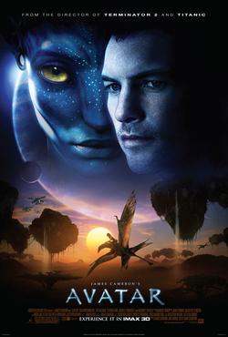

Favorite Sci-fi Movies
Interstellar

Interstellar is a 2014 epic science fiction film co-written, directed, and produced by Christopher Nolan. It stars Matthew McConaughey, Anne Hathaway, Jessica Chastain, Bill Irwin, Ellen Burstyn, Michael Caine, and Matt Damon. Set in a dystopian future where humanity is embroiled in a catastrophic blight and famine, the film follows a group of astronauts who travel through a wormhole near Saturn in search of a new home for humankind. Brothers Christopher and Jonathan Nolan wrote the screenplay, which had its origins in a script Jonathan developed in 2007 and was originally set to be directed by Steven Spielberg. Kip Thorne, a Caltech theoretical physicist and 2017 Nobel laureate in Physics,[4] was an executive producer, acted as a scientific consultant, and wrote a tie-in book, The Science of Interstellar. Cinematographer Hoyte van Hoytema shot it on 35 mm movie film in the Panavision anamorphic format and IMAX 70 mm. Principal photography began in late 2013 and took place in Alberta, Iceland, and Los Angeles. Interstellar uses extensive practical and miniature effects, and the company Double Negative created additional digital effects.
Avatar
Avatar (marketed as James Cameron's Avatar) is a 2009 epic science fiction film directed, written, co-produced, and co-edited by James Cameron and starring Sam Worthington, Zoe Saldana, Stephen Lang, Michelle Rodriguez,[6] and Sigourney Weaver. It is the first installment in the Avatar film series. It is set in the mid-22nd century, when humans are colonizing Pandora, a lush habitable moon of a gas giant in the Alpha Centauri star system, in order to mine the valuable mineral unobtanium.[a] The expansion of the mining colony threatens the continued existence of a local tribe of Na'vi, a humanoid species indigenous to Pandora. The title of the film refers to a genetically engineered Na'vi body operated from the brain of a remotely located human that is used to interact with the natives of Pandora.[10] Development of Avatar began in 1994, when James Cameron wrote an 80-page treatment for the film.[11][12] Filming was supposed to take place after the completion of Cameron's 1997 film Titanic, for a planned release in 1999;[13] however, according to Cameron, the necessary technology was not yet available to achieve his vision of the film.
The Matrix

The Matrix is a 1999 science fiction action film[5][6] written and directed by the Wachowskis.[a] It is the first installment in the Matrix film series, starring Keanu Reeves, Laurence Fishburne, Carrie-Anne Moss, Hugo Weaving, and Joe Pantoliano, and depicts a dystopian future in which humanity is unknowingly trapped inside the Matrix, a simulated reality that intelligent machines have created to distract humans while using their bodies as an energy source.[7] When computer programmer Thomas Anderson, under the hacker alias "Neo", uncovers the truth, he joins a rebellion against the machines along with other people who have been freed from the Matrix. The Matrix is an example of the cyberpunk subgenre of science fiction.[8] The Wachowskis' approach to action scenes was influenced by anime[9] and martial arts films, the use of fight choreographers and wire fu techniques from Hong Kong action cinema influenced the Matrix film series and some other Hollywood action films, Plato's Cave, and 90's Telnet hacker communities. The film popularized terms such as red pill, and introduced a visual effect known as "bullet time", in which the heightened perception of certain characters is represented by allowing the action within a shot to progress in slow-motion while the camera appears to move through the scene at normal speed, allowing the sped-up movements of certain characters to be perceived normally.
Inception
_theatrical_poster.jpg)
Inception is a 2010 science fiction action film[4][5][6] written and directed by Christopher Nolan, who also produced the film with Emma Thomas, his wife. The film stars Leonardo DiCaprio as a professional thief who steals information by infiltrating the subconscious of his targets. He is offered a chance to have his criminal history erased, as payment for the implantation of another person's idea into a target's subconscious.[7] The ensemble cast includes Ken Watanabe, Joseph Gordon-Levitt, Marion Cotillard, Elliot Page,[a] Tom Hardy, Cillian Murphy, Tom Berenger, Dileep Rao and Michael Caine. After the 2002 completion of Insomnia, Nolan presented to Warner Bros. a written 80-page treatment for a horror film envisioning "dream stealers," based on lucid dreaming.[8] Deciding he needed more experience before tackling a production of this magnitude and complexity, Nolan shelved the project and instead worked on 2005's Batman Begins, 2006's The Prestige, and 2008's The Dark Knight.[9] The treatment was revised over six months and was purchased by Warner in February 2009.[10] Inception was filmed in six countries, beginning in Tokyo on June 19 and ending in Canada on November 22.[11] Its official budget was $160 million, split between Warner Bros. and Legendary.[12] Nolan's reputation and success with The Dark Knight helped secure the film's US$100 million in advertising expenditure.
Don't Look Up

Don't Look Up is a 2021 American apocalyptic political satire black comedy film written, co-produced, and directed by Adam McKay from a story he co-wrote with David Sirota.[1] It stars an ensemble cast featuring Leonardo DiCaprio, Jennifer Lawrence, Rob Morgan, Jonah Hill, Mark Rylance, Tyler Perry, Timothée Chalamet, Ron Perlman, Ariana Grande, Kid Cudi, Himesh Patel, Melanie Lynskey, Cate Blanchett, and Meryl Streep. The film tells the story of two astronomers attempting to warn humanity about an approaching comet that will destroy human civilization. The impact event is an allegory for climate change, and the film is a satire of government, political, celebrity, and media indifference to the climate crisis.[6][7] Produced by McKay's Hyperobject Industries and Bluegrass Films, the film was announced in November 2019. Originally set for a theatrical release by Paramount Pictures, the distribution rights were acquired by Netflix several months later. Lawrence became the first member of the cast to join, with DiCaprio signing on after his discussions with McKay on adjustments to the script; the rest of the cast was added through 2020. Filming was initially set to begin in April 2020 in Massachusetts, but it was delayed due to the COVID-19 pandemic; it eventually began in November 2020 and wrapped in February 2021